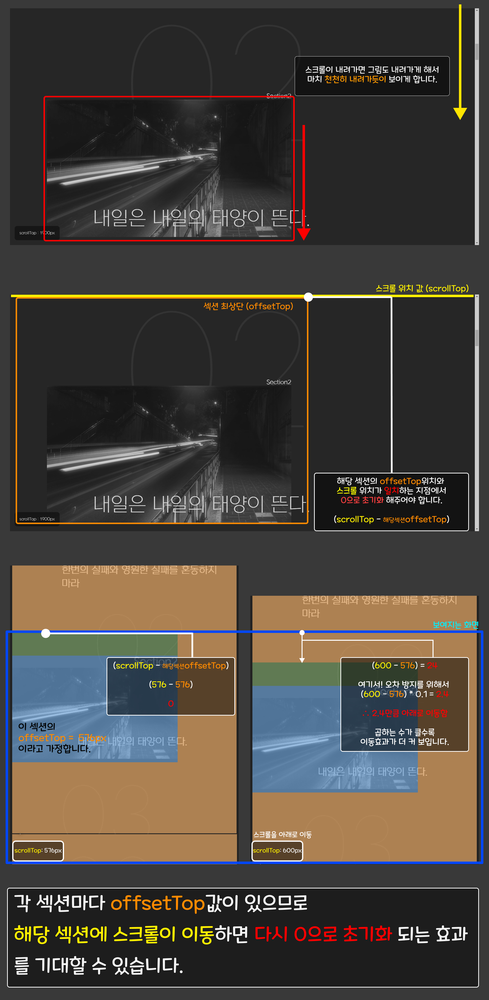

페럴렉스 효과 05
JS 소스
function scroll(){
let scrollTop = window.pageYOffset || document.documentElement.scrollTop;
document.querySelector("#parallax__info span").innerText = Math.ceil(scrollTop);
document.querySelectorAll(".content__item").forEach(item => {
const target1 = item.querySelector(".content__item__img");
const target2 = item.querySelector(".content__item__desc");
const target3 = item.querySelector(".content__item__num");
let offset1 = (scrollTop - item.offsetTop) * 0.1 ;
let offset2 = (scrollTop - item.offsetTop) * 0.2 ;
let offset3 = (scrollTop - item.offsetTop) * 0.15 ;
// target1.style.transform = `translateY(${offset}px)`;
// target2.style.transform = `translateX(${offset2}px)`;
gsap.to(target1, {duration: .3, y: offset1, ease: "power4.out"})
gsap.to(target2, {duration: .3, y: offset2})
gsap.to(target3, {duration: .3, y: offset3, ease: "expo.out"})
});
requestAnimationFrame(scroll);
}
scroll();
■ 핵심 찍먹하기🪓
✔ addEventListener("scroll")을 대체하자! (재귀함수 쓰기)
'window.addEventListener("scroll", scrollProgrss)'를 사용해도 상관은 없지만 좋은 방법이 아닙니다.
이유는 저희는 모르겠지만 스크롤이 될때마다 컴퓨터가 계속해서 반응해야 하므로 살려달라고 외치고 있을거에요.
그래서 우리는 재귀함수를 이용할 것입니다. 재귀함수란 간략하게 설명하자면 함수가 자기 자신을 실행시키는 겁니다.
그럼 문제가 발생하겠죠? 뭘까요? 무한궤도에 빠집니다. 기껏 자기자신을 실행시켰는데 실행 다하고 나니깐 또 자기자신을 실행시키라고 하니깐요. 근데? 이걸 무한반복해야 하니 얼마나 힘들까요.
그래서 requestAnimationFrame를 사용해서 1초에 60번만 실행시키도록 해줍니다. 이걸로 컴퓨터도 숨통이 트이겠군요💨
✔ 스크롤이 밑으로 내려갈때 그림도 따라서 밑으로 이동하게 만들기
데이트를 끝내고 여러분은 혼자만 지하철을 탔습니다. 근데 전철이 출발했어용. 그 때 밖에 정지해 있는 여자친구를 볼까요?
이 여자친구는 멈춰있으니 길어봐야 3초 보지 않을까요? 내일도 여러분은 데이트를 하고 또 혼자만 지하철을 탔습니다. 근데 여자친구가 오늘은
지하철 가는 방향하고 같이 뛰네요? 그러면 정지해있던 3초보다는 좀 더 오래 볼 수 있겠죠?
이걸 왜 얘기했냐고요? 제가 이렇게라도 생각해서 이해를 조금이나마 했거든요^_^
스크롤은 지하철이 되고, 각 섹션은 여자친구로 생각해야겠네요. 여자친구가 참 많군요.
자 그럼 방향은 대충 잡았구요! 이걸 어떻게 이번 사이트에 녹여야 할지 고민해볼게요.
우선, 옮기고자 하는 영역을 밑으로 내린다? transform을 사용해야 겠구요.
각각의 'content__item'의 offsetTop위치(영역 가장윗부분)에 scrollTop이 도달했을때의 값을
0으로 만들어준다면 모든 섹션에서 작동할 수 있게 할 수 있습니다.
그리고 조금씩 스크롤을 내리면 자동적으로 scrollTop값은 증가하므로 스크롤값과 offsetTop값의 차이가 발생합니다. 여기서 작은 오차들을 방지하고자 0.1을 곱해주게 됩니다.
예를 들어 2번 섹션의 오프셋값이 576px이라고 가정하고 3번섹션의 오프셋값은 1500px이라고 가정해 보겠습니다.
그럼 scrollTop이 576px일땐 0이 되고,
scrollTop이 776px이 되면 차이가 200px, 여기에 0.1을 곱하므로 최종적으로는 20이 반환됩니다.
이 반환된 20을 translateY에 대입하여 20px만큼 밑으로 내려가게 효과를 주는 것이죠.
이러한 방식을 scrollTop값이 3번섹션인 1500px에 도달할때까지
반복하다가 3번섹션인 1500px이되면 1500px-1500px이 되어 다시 0부터 시작됩니다.
그럼 다시 0부터 차잇값을 translateY에 대입하게 되겠네요.
✔ GSAP 활용하기
transform효과를 사용해도 좋지만 GSAP를 활용해서 CSS보다 더 부드러운 효과를 내봅시다!
잊지 말고 CDN 써주세요
<script src="../assets/js/gsap.js"></script>
■ 그림 설명은 못 참지🎨
🙇♀️ 틀린 점에 대한 지적은 언제나 환영합니다 🙇♂️